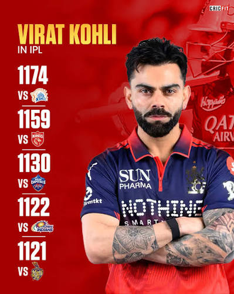
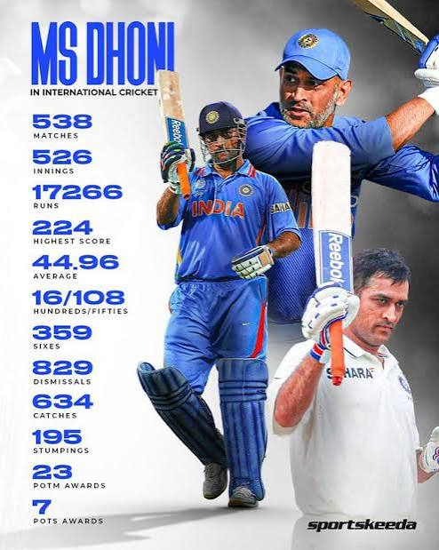

Virat Kohli is one of the best batsmen in Indian cricket. He is known for his aggressive batting, fitness, and record-breaking performances. He has represented India in Test, ODI, and T20 cricket.

MS Dhoni is one of the greatest captains in Indian cricket. He is famous for his calm leadership, finishing ability, and match-winning performances. He led India to victories in the T20 World Cup, ODI World Cup, and Champions Trophy.